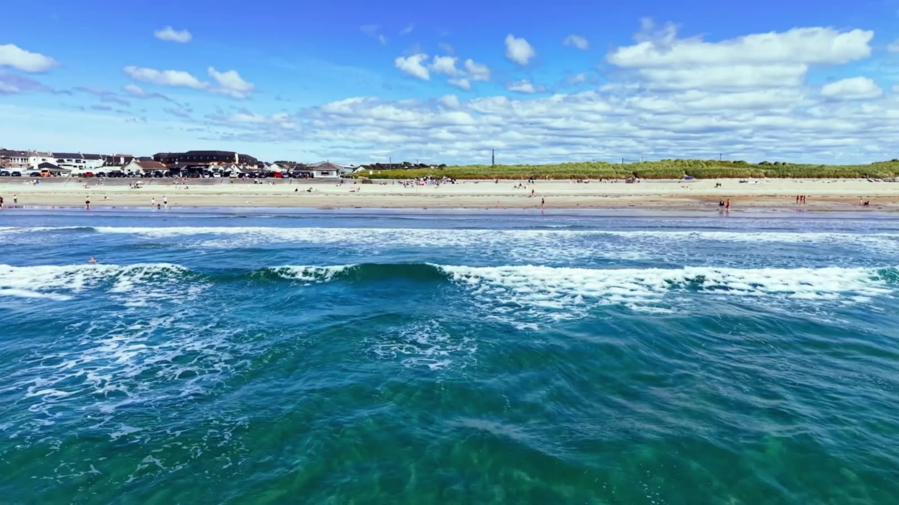
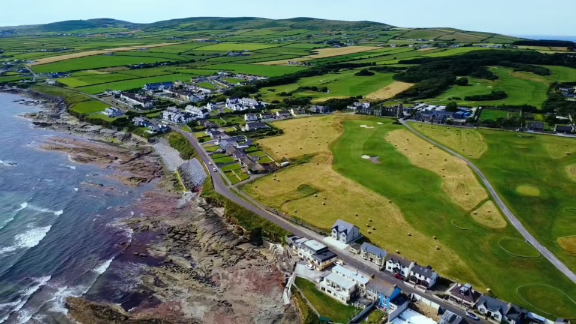
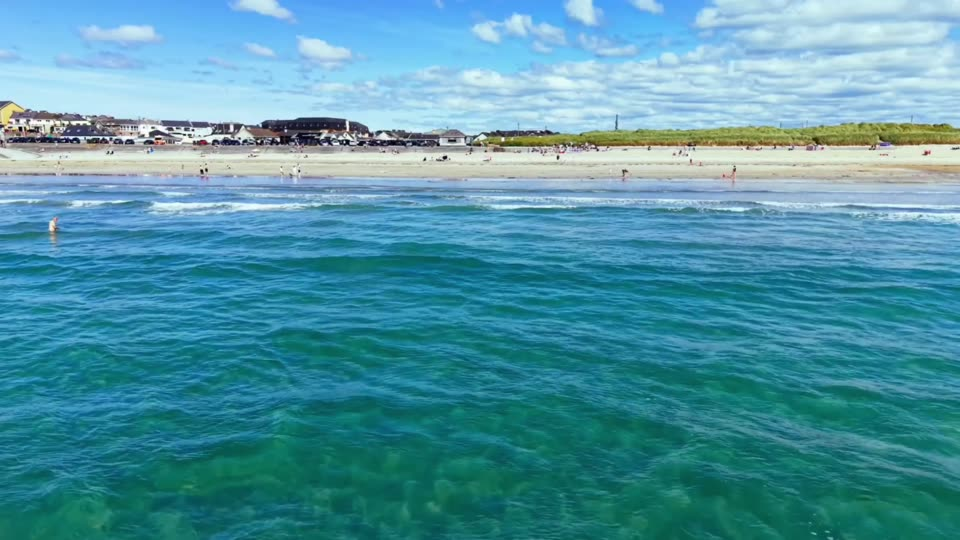
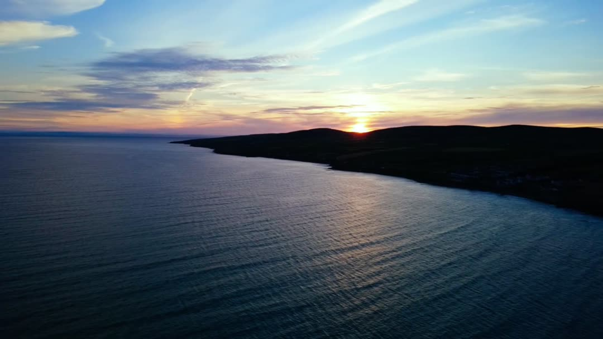

Things to do
Ten local favourites, picked by the people who live here.

01Ballyheigue Beach
Three kilometres of golden Blue Flag sand backed by dunes, looking out over Tralee Bay. Swim, surf, kayak or fish from the shore, with lifeguards in the bathing season, parking beside the beach and a playground across the road.
Free, dog friendly, family friendly
- 02
The Black Rock
The local landmark at the end of the classic beach walk, about 5km there and back, and one of the best places to watch the Atlantic roll in.
Walk
 03
03Kerry Head coastal drive
A loop around the peninsula with ocean views at every bend, across to Banna Strand, Tralee Bay and the Dingle mountains. Drive it, cycle it or walk sections of it.
Drive or cycle

04Ballyheigue Castle
The striking ruin of the Crosbie family's mansion, standing above the village and the golf course.
History, free
 05
05Roger Casement monument
A small green with a big view over the beach, commemorating one of the significant figures of Irish history. Bring a coffee.
History, free

06Seaside sauna
Warm up after a sea swim with a sauna session overlooking the beach. Heat, a cold plunge in the Atlantic, repeat.
Wellness, book ahead
 07
07Ballyheigue Castle Golf Club
Nine holes around the 18th-century castle, with views over the beach to the Brandon mountains. Visitors welcome.
Golf
 08
08The local pubs
A warm welcome, a good pint and music nights in high season. After a day on the beach, there's nowhere better.
Live music, food
 09
09Ballyheigue Amusements
A nostalgic seaside favourite on the front that's been part of summer holidays here for generations.
Kids, rainy days

10Kerry Head walking trails
Cliffs, quiet country lanes and the Cahercarbery forts, thought to be over 2,000 years old. Ballyheigue is also the end of the 48km North Kerry Way from Tralee.
Walk, heritage
Rainy day
Head for the amusements, warm up in the sauna or settle into a pub. Tralee's Kerry County Museum is 25 minutes away, and Banna Leisure Centre down the road has an indoor pool.
What's on
July brings the Ballyheigue Summer Festival and Races. In late summer the village fills for the Pattern, a three-day festival with deep local roots.
Fishing
Bass, flounder and turbot from the beach; pollock and mackerel off the Kerry Head rocks, with real care. Sea angling charters run from Fenit.